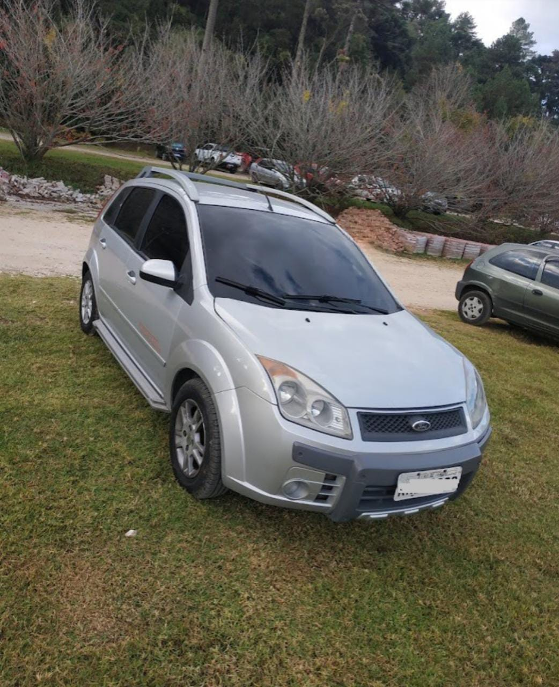

Fiesta
Se você está procurando um carro confiável e versátil, o Fiesta Trail 2008 é uma excelente opção. Este carro compacto tem muitos pontos positivos que fazem dele uma escolha popular entre os motoristas.
Ver Mais

Se você está procurando um carro confiável e versátil, o Fiesta Trail 2008 é uma excelente opção. Este carro compacto tem muitos pontos positivos que fazem dele uma escolha popular entre os motoristas.
Ver Mais
Excelente consumo de combustível, com uma média de 11 km/l na cidade e 14 km/l na estrada, o que permite economizar dinheiro ao longo do tempo.

Um porta-malas com capacidade de 281 litros, além do banco traseiro rebatível, permitindo que o espaço de carga seja ampliado, o que é ótimo para transportar objetos maiores.

Este carro é equipado com freios ABS e airbags frontais, além de sistema de alarme e travamento central, garantindo a segurança dos passageiros e do veículo.
O Fiesta Trail 2008 é um carro confiável, econômico, seguro e fácil de dirigir, com um bom espaço de carga e um design moderno. Se você procura um carro compacto que atenda às suas necessidades diárias, o Fiesta Trail 2008 é uma excelente opção.